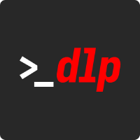

VIDEO ENGINE
CODE → 3D REELS
100% LOCAL PIPELINE
● SIRI · VOICE CLONE
BEHIND THE SCENES
After Effects
Premiere Pro
পুরো 3D রিলস তৈরি হয় কোড দিয়ে!
Python + HTML5 + GSAP + Local AI
STEP 1 · ANALYSIS & SCRIPT

→ভাইরাল পেসিং অ্যানালাইসিস
yt-dlp ও ffprobe দিয়ে সিন কাট ও স্ক্রিপ্ট প্ল্যান
STEP 2 · OFFLINE VOICE CLONE
OmniVoice (10s Clip → Bangla)
Mac-এ অফলাইনে ন্যাচারাল বাংলা ভয়েসওভার
STEP 3 · 3D HTML + GSAP
 +
+

3D কার্ড ও সিংকড ক্যাপশন
tl.fromTo('#card', { rotateY: -10 }, { rotateY: 0 })
✓ Word-level timestamps synced
STEP 4 · RENDER & SFX
→

1080p · 30fps · Real SFX
HyperFrames + FFmpeg দিয়ে ক্রিস্প ফাইনাল MP4
100% AUTOMATED
পুরো Video Engine গাইড চাও?
নিচে "CODE" কমেন্ট করো—সম্পূর্ণ ওয়ার্কফ্লো পেয়ে যাবে!
COMMENT "CODE" ↓